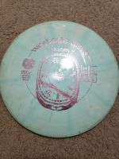
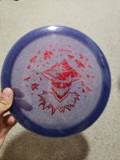

More About Me
My name is Ethan Frerichs. I really enjoy playing disc golf. I started playing disc golf about 3 years ago during my senior year of highschool. I played for about a year and got pretty good. I was able to get my best distance drivers to about 300 feet. Then I stop playing for about a year. This year I have started playing a lot more disc golf again. I started playing at leagues at Seymore Smith park mainly doubles and have placed three of the last four weeks i have place. I have tied for second place twice and even gotten 1st once. I still have a lot to improve on in my game but I have cut about 5-6 points off my average score in the last 6 months alone. My putting definitely needs help.
There are a lot of different types of discs but the main kinds of discs are similar to golf. Wev have distance drivers, fairway drivers, mid ranges, and putt and approach discs. I will be talking about drivers here. Drivers are typically around 14-10 speed which means the perosn throwing the disc needs to have there arm speed reach what is known as 14 speed for example in order to get the full flight out of the disc. The most popular distance driver is a destroyer which is a 12 speed disc and is semi beginner friendly for those looking for a distance driver. My go to distance driver is a destiny which is a 14 speed disc but does not require that much arm strenth. I can throw the destiny about 420feet. Which is almost one and a half fottball fields.

The next type of disc is a fair way driver. Which is what I would recommend a beginner throw. They require a bit of throwing power but can go about as far as a distamce driver. Especially for beginners but the trick with fairway drivers is that they are much easier to control. My go to fairway driver is a explorer which or thunderbird. I have been using a thunderbird since I first started playing frisbee golf and I still use it often. It is my favorite disc in my bag. I havejust recently started throwing an explorer and I absolutely lover the way they throw. It's straight with a lot of fade at the end.

The next type of disc is a mid range. Mid ranges are nice for control shots within about 300 feet. They are very over looked but they are very important especially for beginners. They do not have very much or need much power to throw and that is why they are overlooked. It is much more fun to throw a distance driver and have it fly high and seemingly far but the truth is mid ranges can fly about the same distance as well but will give the throw more control and will improve their game tremendously. My go to mid range is a buzzz which is a very popular mid range.

The next type of disc is a putter. Putters are used for putting mainly and there are many types of putters out there. Putting is a very important part of the game so there are a lot of types of putters out there for everybody, the key to finding a good putter for you is mainly comfort. The truth is most putters do the same thing they are are not all made from the same plastic and have different rims and tops. My go to putting putter are Ions. Putters can also be used for throwing and approaches. You can use a putter on a 250ft or 300ft hole even. A lot of pros can throw a putter about 400 ft. which is cracy becuase most people cannot throw a distance driver 400ft. on a good throw I can get a putter about 250ft to 300ft. My go to trhowing putter changes a lot buti have begun throwing a zone by discraft.